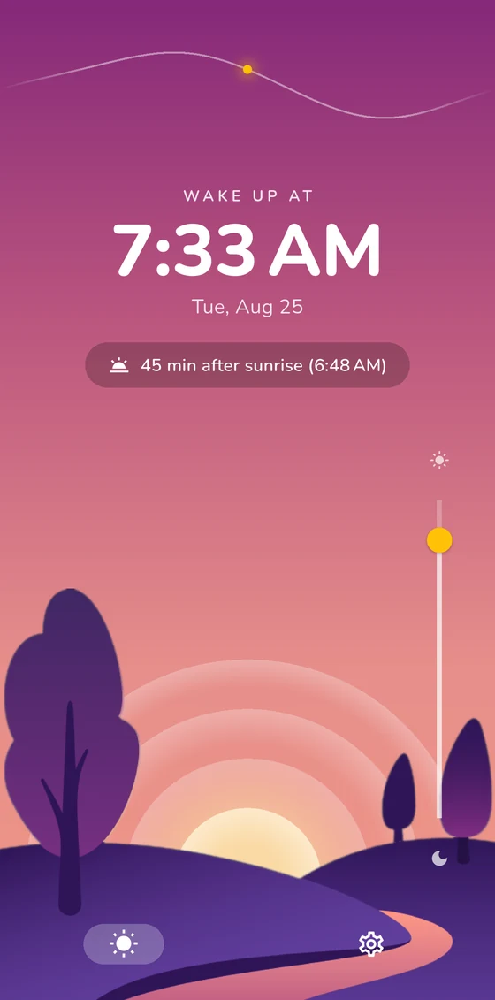

Sunrise shifts a little every day. Your alarm should too. Wake at Sunrise computes tomorrow's sunrise for your exact location and rings right then — or the minutes before or after that suit you.

How it works
The app needs to know where on Earth you wake up. That's the only thing it asks for — and it stays on your phone.
Ring exactly at sunrise, or minutes before or after. Choose which days of the week the alarm is on.
Every night the alarm quietly re-aims itself at tomorrow's sunrise. As dawn drifts through the year, your wake-up drifts with it.
Features
One job — waking you at dawn — done carefully.
Not a city average — the actual sunrise time for where your phone is, computed on-device with astronomical math.
Tell it how much sleep you want and how long you need to wind down. It counts backwards from tomorrow's sunrise and nudges you to bed on time.
A chart of sunrise drift across the whole year — with a dot on today — so you know what your mornings are heading toward.
Rings over the lock screen, survives reboots, and can override the system volume so a quiet phone doesn't mean a missed morning.
No weather service, no server. Sunrise is calculated locally, so the alarm works in airplane mode and off the grid.
Fully localized, with snooze duration, volume, and weekday scheduling all configurable.
Privacy
The app's one permission of note is location — and it's used for exactly one thing: computing sunrise where you are.
Early access
Wake at Sunrise is in closed beta on Android. Two quick steps and it's yours — your feedback shapes the launch.
Google Play needs your account on the tester list before it will show you the app.
Join the groupOpen this on the phone you'll test with, signed in to that same Google account.
Open the test on Google PlayTesting is free and there's nothing to buy. Please keep the app installed for a couple of weeks — Google counts continuous testers before it lets a new app go live.